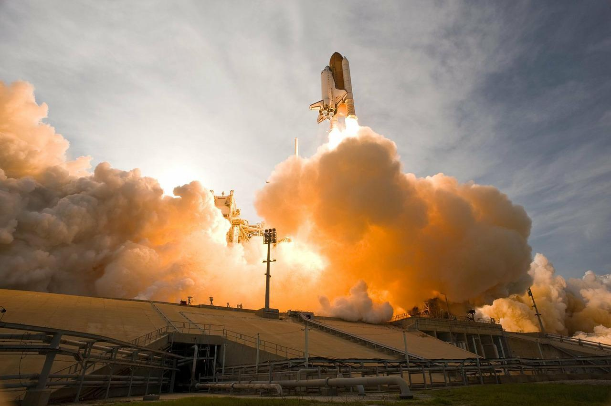

Durant la guerre froide, de 1947 à 1991, les Etats Unis et l'URSS s’affrontent dans de nombreux domaines : scientifiques, militaires, et culturels. Grâce aux nouvelles technologies, le rêve de se rendre dans l’espace est à portée de main pour ces deux puissances mondiales.
Dans les années 1960, l’URSS possède une longueur d’avance sur son concurrent américain. Elle le devancera en accomplissant la plupart des grandes premières spatiales.
Les soviétiques sont en effet les premiers à lancer un satellite artificiel qui tournera autour de la Terre, “Spoutnik 1”, en 1957. Il sera suivi de près par “Spoutnik 2” lancé en novembre 1957, avec la chienne Laïka à bord. Malheureusement, elle mourut au bout de cinq heures dans l’espace, à cause du stress et de l’augmentation de la température. Cet évènement marqua par ailleurs le début d’une prise de conscience et de manifestations pour le respect des animaux dans les expériences scientifiques.
Le premier satellite américain est lancé en 1958, il s’agit de Explorer 1.
Ensuite, en 1961, les russes réalisent un autre exploit spatial en envoyant le premier homme dans l’espace à bord de Vostok 1. Il s’agit du pilote et cosmonaute soviétique Youri Gagarine. 108 minutes après le lancement, il se posera sur terre en parachute. Cet événement ouvre la voie à des missions de plus en plus ambitieuses ayant pour but final la conquête de l’espace.
En juillet 1962, les américains lancent leur premier satellite de télécommunication expérimental “Telstar 1”, dans un cadre commercial .
5 mois auparavant, en février, Alan Shepard réalise un vol suborbital de 15 minutes, dans le cadre du programme spatial Mercury. La même année, John Glenn est le premier américain en orbite avec Mercury Friendship 7.
La première femme russe dans l’espace sera Valentina Terechkova, une ouvrière dans le textile. Elle sera mise en orbite à bord du Vostok 6, en juin 1963.
C’est ensuite le programme Gemini qui permet la réalisation de sorties extravéhiculaires et de manœuvres orbitales. Les russes sont encore une fois les premiers à réaliser une sortie dans l'espace. Alexeï Leonov effectue la première sortie extravéhiculaire le 18 mars 1965. Il sera en revanche suivi de près par l’américain Edward White le 3 juin 1965.
En 1969, Apollo 11, l’américain Neil Armstrong marche pour la première fois sur la lune “C’est un petit pas pour l’homme, mais un bond de géant pour l’humanité”. Le programme Apollo permet ainsi la conquête de la lune, et les américains réalisent pour la première fois un exploit historique avant les soviétiques.
Finalement, la première navette spatiale américaine Columbia est lancée en 1981. Celle-ci réalisera 28 vols spatiaux avant de se désintégrer lors de son retour sur terre le 1 février 2003.
C’est seulement en 1988 que la première navette spatiale soviétique est lancée, baptisée Bourane ( tempête de neige ). Elle effectuera deux fois le tour de la terre avant de revenir se poser sur terre.
Cet article a été rédigé par Claire Dixon et Alice Anthiniac